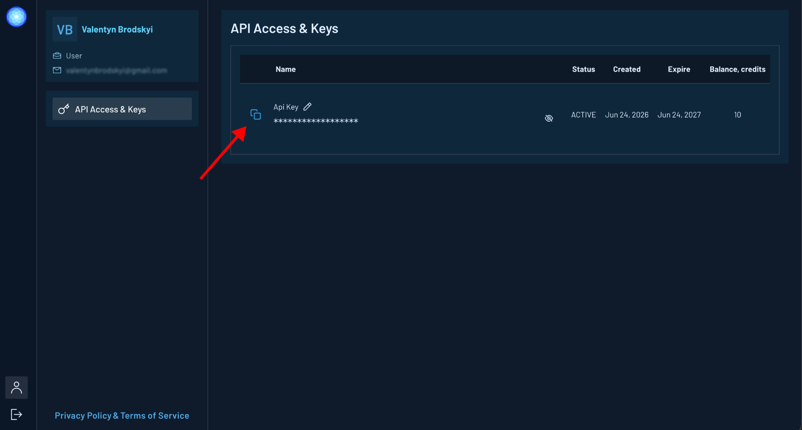
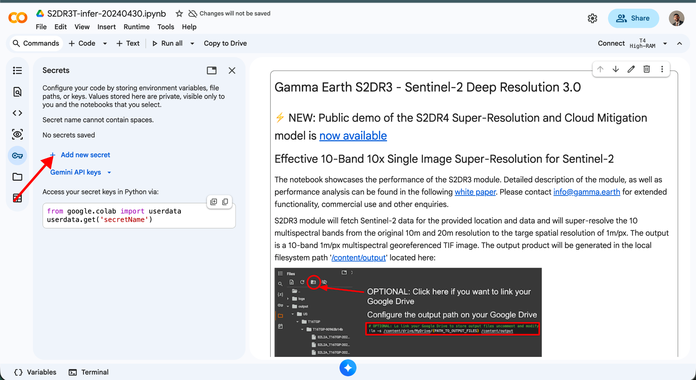
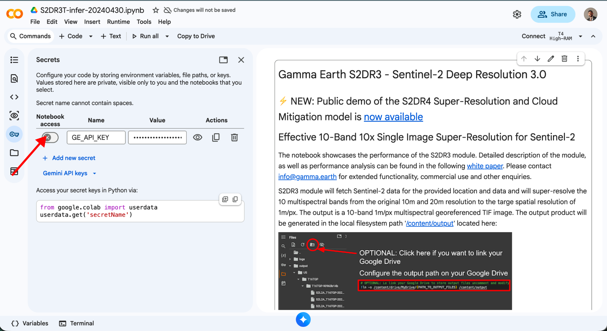

Connect Your Gamma Earth Account to Google Colab
Last update: 21 July 2026
Starting 22 July 2026, Gamma Earth is introducing user accounts for Google Colab. Until 1 September 2026, you can keep using Gamma Earth through Google Colab as usual — no action needed.
After 1 September 2026, only registered users who have added their Gamma Earth API key to Google Colab will be able to process data through our services. To keep using Gamma Earth after that date, complete the steps below.
1. Create your Gamma Earth account
Go to app.gamma.earth/register?invite=google-colab and register using your preferred sign-in method.
2. Copy your API key
After creating your account, open the API Access & Keys page and copy your API key.

Keep your API key private — do not share it with anyone.
3. Add the API key to Google Colab
Open your Gamma Earth notebook in Google Colab and go to the Secrets panel. Create a new secret named:
GE_API_KEY

Paste your Gamma Earth API key into the Value field, then enable notebook access for the secret.

Once this is done, you can continue using Gamma Earth through Google Colab as before.
For any questions or assistance, contact us at support@gamma.earth.